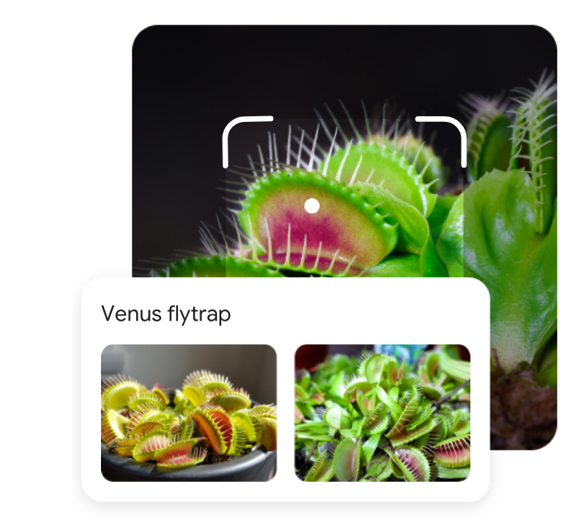

Introduction
CAS Deep Learning - Computer Vision (Part1)
Synthetic Image Detection


Image Search and Understanding


AI Chips

From Link.
Image Classification

Multi-Class Image Classification Beispiel (aus Krizhevsky, Sutskever, and Hinton (2012)).
Object Detection

Object detection involves locating and recognizing multiple objects in an image (from Redmon et al. (2016)).
Segmentation

In segmentation, individual pixels are assigned to specific objects (instance segmentation) or classes (semantic segmentation). From He et al. (2018).
Image Generation - Translation

Translation examples from Isola et al. (2018).
Image Generation - Super Resolution

Nvidia dlss: Link
{kind=link}
Image Generation - Colorization

Norwegian Bride (est late 1890s) from DeOldify: Link
Viewpoint

Figure 9: The same cat from different viewpoints looks completely different at the pixel level.
Deformation

Figure 10: Cats exhibit significant shape variation due to pose changes. Source
Background Clutter

Figure 12: Cat camouflaged against a similarly-textured background. Source
Occlusion

Figure 13: Partially occluded cat - only part of the object is visible. Source
Context Dependence - Blurred Objects

Figure 15: Source Torralba, Murphy, and Freeman (2010)
Question: What kind of objects are marked in these images?